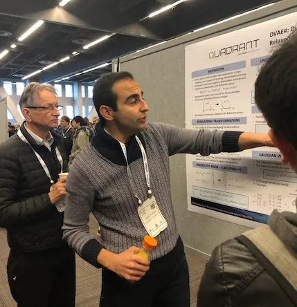
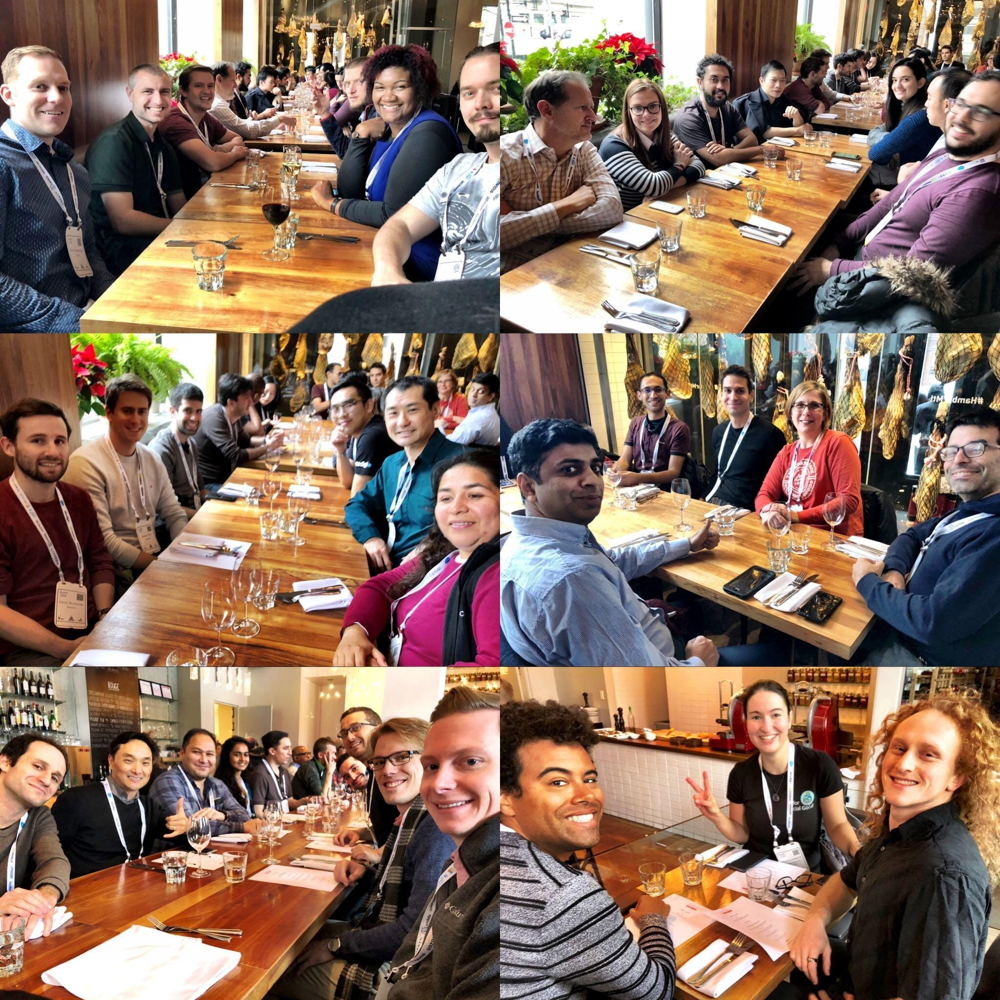

Two weeks ago in Montreal, NeurIPS (formerly known as NIPS) took place, the world’s largest conference on machine learning and artificial intelligence. Major advancements in the field were presented, covering Deep Learning, GANs, and Reinforcement Learning, including both theory and practice. Over eight thousand people attended, more than a thousand papers were accepted, and dozens of workshops were held. Additionally, nearly all major tech companies were present, primarily aiming to recruit scientists and researchers.
I went to NeurIPS to present the work Adversarial Attacks on Variational Autoencoders at the LatinX in AI workshop, co-authored by George Gondim, myself and our professor Eduardo Valle. At NeurIPS 2017, Prof. Valle presented two works we wrote together: Adversarial Images for Variational Autoencoders at the Adversarial Training workshop and Known Unknowns: Uncertainty Quality in Bayesian Neural Networks at the Bayesian Deep Learning workshop. It’s a great feeling to finally be able to present the work myself!
Speaking of LatinX, this year diversity and inclusion were the hottest topics at the conference. We had three other workshops dedicated to this (Black in AI, Women in ML, Queer in AI), as well as smaller talks and gatherings on the subject. Despite this, more than half of the Black in AI participants couldn’t obtain visas in time or were denied, which had some repercussions and may influence future conference locations. At LatinX, the Latin American artificial intelligence meeting Khipu was announced, scheduled to take place in Montevideo in November 2019. We Brazilians cannot miss this opportunity!
The conference had its issues: tickets sold out in just 11 minutes; last-minute name change (and we were left without mugs because of it); overcrowded sessions, with people being kicked out due to “fire hazards”; numerous audiovisual problems (it would have been better to watch many talks from home). Despite all of this, the experience is certainly unique: there’s no other place in the world where you might bump into Geoff Hinton, Yoshua Bengio, and Yann LeCun in the halls. Of course, they’ll always be surrounded by fans and people wanting to take photos!

Although these “celebrities” were present, their students were the ones presenting the academic work. With over a thousand papers at the main conference and hundreds at the workshops, it’s hard to know be aware of everything that happened there. I noted down more than 30 articles to review more carefully later. Although this is a large amount to read, it’s only a fraction of the total. For those who want a taste of what’s published there, here are some examples:
Best papers (according to reviewers and program committee):
- Neural Ordinary Differential Equations
- Non-delusional Q-learning and Value-iteration
- Optimal Algorithms for Non-Smooth Distributed Optimization in Networks
- Nearly Tight Sample Complexity Bounds for Learning Mixtures of Gaussians via Sample Compression Schemes
Best papers (according to me):
- Regularization Learning Networks: Deep Learning for Tabular Datasets
- Bayesian Neural Network Ensembles
- The Everlasting Database: Statistical Validity at a Fair Price
- How to Start Training: The Effect of Initialization and Architecture
Besides the academic side, NeurIPS has a strong social aspect: parties and gatherings. Excluding the official closing, the parties were all sponsored by companies. I attended two (Nvidia and Element AI), with excellent food and drinks. There’s a bit of elitism: I only managed to attend these two parties thanks to a friend who works with big names in a Montreal lab. However, every day there were several options, with varying degrees of difficulty to get a ticket.
In my opinion, the gatherings organized by participants through the conference app were the best part of the week, as they brought together people with similar interests and objectives. I attended AI for Business and AI in Production, both highly relevant to my work as a data scientist at Nubank. At those events, it’s possible to meet people from various backgrounds and profiles who share something with you, without the elitism of those exclusive parties.

Finally, the last two days were dedicated to workshops. In them, you could delve deep into a specific topic and even learn about things not officially published anywhere yet. The workshop that left the greatest impression on me was AI in Financial Services. However, it had a strong bias toward North American and European realities, mostly discussing regulations and how machine learning could be done within these constraints. For example, in those countries, you need to explain the reasons for denying a loan, but how do you do that if the loan risk is calculated by a deep neural network? However, many countries like China, India, and Brazil don’t have such restrictions, so our challenges are different and were barely explored there. I can say that Nubank is at the forefront of applying machine learning to financial products globally.
NeurIPS is an academic conference, not the best place to meet other data scientists, but rather the best place to find the top machine learning and AI researchers. I recommend the experience for those with an academic inclination, who have the habit of reading papers and plan to or have already published work in the field. If you have more practical interests, there are conferences and meetings that may be more useful professionally and more accessible, such as Strata, PAPIs.io or even KDD. The most important thing is to get out there and meet new people, but don’t forget to take some time to explore and enjoy the trip!